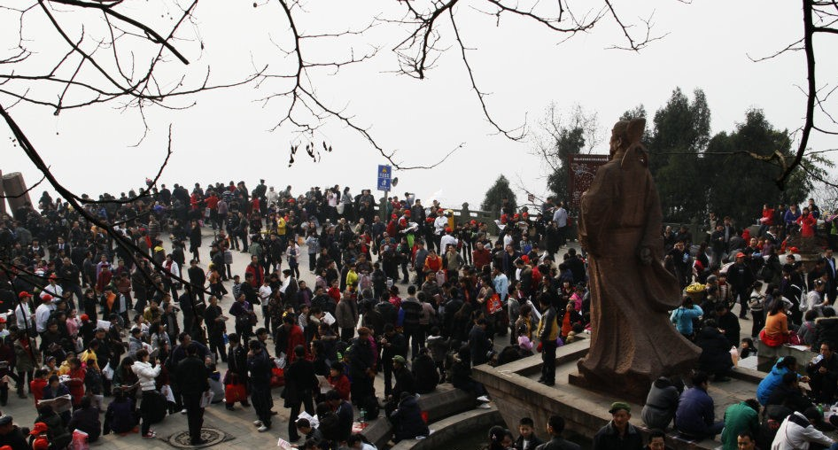
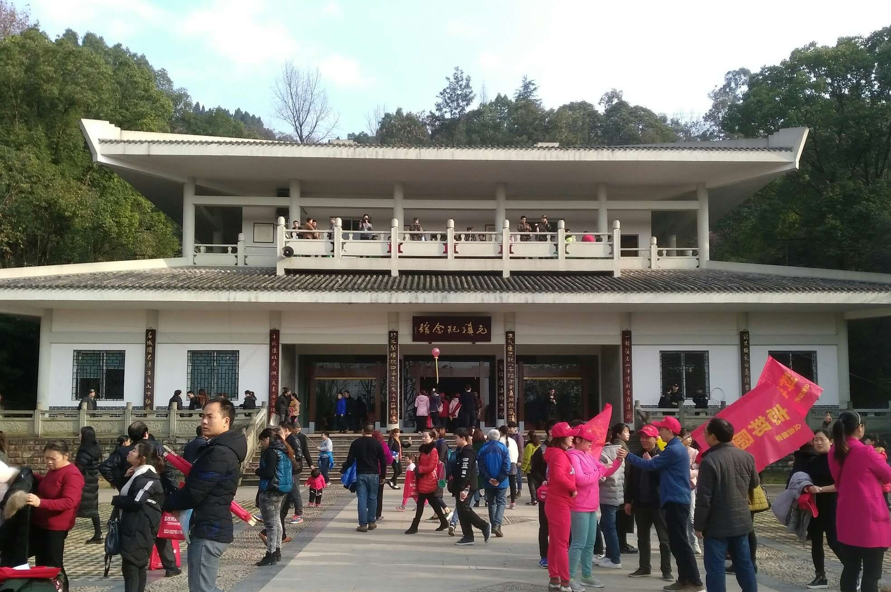

| 元九登高节是四川达州的地方传统节日，是四川十大地方名节，是第二批省级非物质文化遗产，是绵延上千年传承下来的一项盛大的登高民俗活动。每年农历正月初九，数十万人风雨无阻，倾城出游，登高望远，不达山顶决不罢休，纪念曾在达州"以清廉勤政为官"著称的唐代大诗人元稹。达州人以这种独特的方式祭天祈福，期待一扫去岁颓势，迎来新年万事畅达，这一壮观景象在全国也属罕见。 | ||
习俗由来 |
登高盛况1 | |
有关达州人"元九"登高习俗的由来一直存在着两种说法： |
 | |
元稹纪念馆 |
登高盛况2 | |
元稹纪念馆坐落在凤凰山半山腰，面对达城，背靠大山。纪念馆主体建筑为二层仿唐风格，配以2000平方米的广场和青石石梯、浮雕护栏，整个纪念馆简洁而大气，令人耳目一新，为每年登高节游人必去之处。 馆内有元稹塑像和元稹贬谪达州之时创作的震古烁今的长篇叙事诗《连昌宫词》。纪念馆主展区---元稹遗韵：元稹传略、元稹的文学成就、元稹与通州、元稹的影响与传承。沿凤凰山黄桷树至公墓路或经元稹纪念馆一路上行，便可抵达"元稹诗廊"。走近诗廊。便可见"元稹诗廊"书法横匾和圆拱门两边的元稹诗句联。横匾乃行书而为，厚重而拙朴，遒劲有力；楹联乃隶书所作，凝练而开张，端庄古雅。长廊依山的粉墙上，一块块石碑，整齐地排列有序，横幅竖幅，团扇斗方，错落有致，落落大方，青石白字，尽显古朴清雅之境。 |
 | |
现实意义 |
节日当天纪念馆外部 | |
达州“元九”登高，把唐代大诗人元稹作为纪念的对象，实际上体现了人民对文化的热爱和对官员德政的向往，体现了人民朴素的情感。元稹的诗文不但引起我国世代人们的景仰，还引起外国友人学者的尊敬，足见其长久的艺术生命力。元稹和白居易的“新乐府”诗歌是现实主义诗歌，与百姓贴得很近，能唱能诵，自然受到喜爱，在民间有广泛的影响。人们纪念元稹，也体现了人民对中国古代优秀传统文化的热爱，对历史上杰出人物的崇敬。 |
||
| 登高盛况3 | ||
1 2